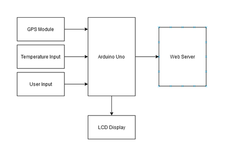
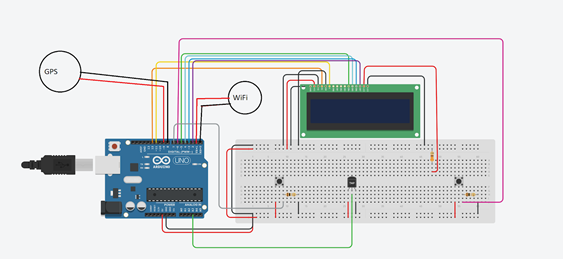

IoT Device

The purpose of this project was to allow for automatic monitoring of who was entering buildings in order to prevent the transfer of COVID-19. The device works by displaying a series of yes or no questions to the user at the end of the set of questions the users' temperature will be taken, based on the answer to the questions and the temperature taken the user will either be admitted to the building or turned away. If the user is turned away the GPS coordinates of the device will be noted and sent to a remote server where they will be logged. Below is a picture of the flow of the system.
Below is a schematic of the hardware used for this project
Below is video demonstration of the device